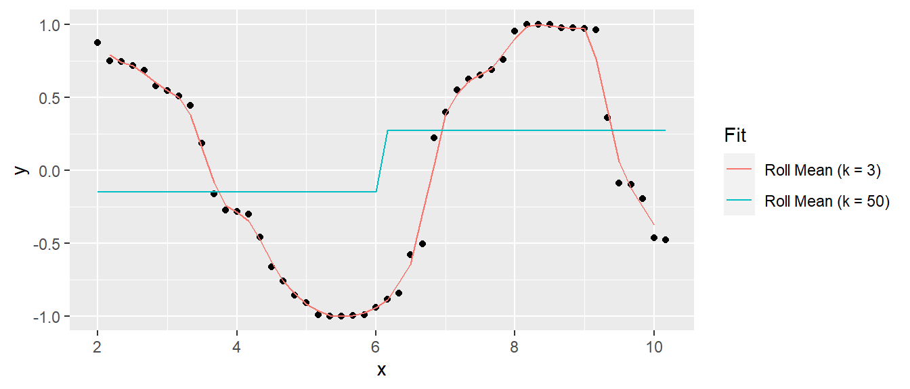

4.7 Model Validation
Evaluate predictive accuracy by training the model on a training data set and testing on a test data set.
4.7.1 Accuracy Metrics
The most common measures of model fit are R-squared, RMSE, RSE, MAE, Adjusted R-squared, AIC, AICc, BIC, and Mallow’s Cp.
4.7.1.1 R-Squared
The coefficient of determination (R-squared) is the percent of total variation in the response variable that is explained by the regression line.
\[R^2 = 1 - \frac{SSE}{SST}\]
where \(SSE = \sum_{i=1}^n{(y_i - \hat{y}_i)^2}\) is the sum squared differences between the predicted and observed value, \(SST = \sum_{i = 1}^n{(y_i - \bar{y})^2}\) is the sum of squared differences between the observed and overall mean value, and \(RSS = \sum_{i=1}^n{(\hat{y}_i - \bar{y})^2}\) is the sum of squared differences between the predicted and overall mean “no-relationship line” value. At the extremes, \(R^2 = 1\) means all data points fall perfectly on the regression line - the predictors account for all variation in the response; \(R^2 = 0\) means the regression line is horizontal at \(\bar{y}\) - the predictors account for none of the variation in the response. In the simple case of a single predictor variable, \(R^2\) equals the squared correlation between \(x\) and \(y\), \(r = Cor(x,y)\).
ssr <- sum((m$fitted.values - mean(d$mpg))^2)
sse <- sum(m$residuals^2)
sst <- sum((d$mpg - mean(d$mpg))^2)
(r2 <- ssr / sst)## [1] 0.88## [1] 0.88## [1] 0.88\(R^2\) is also equal to the correlation between the fitted value and observed values, \(R^2 = Cor(Y, \hat{Y})^2\).
## [1] 0.88R-squared is proportional to the the variance in the response, SST. Given a constant percentage error in predictions, a test set with relatively low variation in the reponse will have a lower R-squared. Conversely, test sets with large variation, e.g., housing data with home sale ranging from $60K to $2M may have a large R-squared despite average prediction errors of >$10K.
A close variant of R-squared is the non-parametric Spearman’s rank correlation. This statistic is the correlation of the ranks of the response and the predicted values. It is used when the model goal is ranking.
4.7.1.2 RMSE
The root mean squared error (RMSE) is the average prediction error (square root of mean squared error).
\[RMSE = \sqrt{\frac{\sum_{i=1}^n{(y_i - \hat{y}_i)^2}}{n}}\]
## [1] 2.1The rmse() function from the Metrics package, and the postResample() function in caret calculate RMSE.
## [1] 2.1## RMSE
## 2.1The mean squared error of a model with theoretical residual of mean zero and constant variance \(\sigma^2\) can be decomposed into the model’s bias and the model’s variance:
\[E[MSE] = \sigma^2 + Bias^2 + Var.\]
A model that predicts the response closely will have low bias, but be relatively sensitive to the training data and thus have high variance. A model that predicts the response conservatively (e.g., a simple mean) will have large bias, but be relatively insensitive to nuances in the training data. Here is an example of a simulated sine wave. A model predicting the mean value at the upper and lower levels has low variance, but high bias, and a model of an actual sine wave has low bias and high variance. This is referred to as the variance-bias trade-off.

4.7.1.3 RSE
The residual standard error (RSE, or model sigma \(\hat{\sigma}\)) is an estimate of the standard deviation of \(\epsilon\). It is roughly the average amount the response deviates from the true regression line.
\[\sigma = \sqrt{\frac{\sum_{i=1}^n{(y_i - \hat{y}_i)^2}}{n-k-1}}\]
## [1] 2.5# sd is sqrt(sse / (n-1)), sigma = sqrt(sse / (n - k - 1))
sd(m$residuals) * sqrt((n - 1) / (n - k - 1)) ## [1] 2.5## [1] 2.5## [1] 2.54.7.1.4 MAE
The mean absolute error (MAE) is the average absolute prediction arror. It is less sensitive to outliers.
\[MAE = \frac{\sum_{i=1}^n{|y_i - \hat{y}_i|}}{n}\]
## [1] 1.7The postResample() function in caret conveniently calculates all three.
## RMSE Rsquared MAE
## 2.08 0.88 1.70## RMSE Rsquared MAE
## 2.08 0.88 1.70## [,1]
## RMSE 2.08
## Rsquared 0.88
## MAE 1.70These metrics are good for evaluating a model, but less useful for comparing models. The problem is that they tend to improve with additional variables added to the model, even if the improvement is not significant. The following metrics aid model comparison by penalizing added variables.
4.7.1.5 Adjusted R-squared
The adjusted R-squared (\(\bar{R}^2\)) penalizes the R-squared metric for increasing number of predictors.
\[\bar{R}^2 = 1 - \frac{SSE}{SST} \cdot \frac{n-1}{n-k-1}\]
## [1] 0.83## [1] 0.834.7.1.6 AIC
Akaike’s Information Criteria (AIC) is a penalization metric. The lower the AIC, the better the model.
## [1] 1604.7.1.7 AICc
AICc corrects AIC for small sample sizes.
## [1] 1684.7.1.8 BIC
The Basiean information criteria (BIC) is like AIC, but with a stronger penalty for additional variables.
## [1] 1764.7.1.9 Mallows Cp
Mallows Cp is a variant of AIC.
4.7.1.9.1 Example
Compare the full model to a model without cyl.
The glance() function from the broom package calculates many validation metrics. Here are the validation stats for the full model and then the reduced model.
## # A tibble: 1 x 5
## adj.r.squared sigma AIC BIC p.value
## <dbl> <dbl> <dbl> <dbl> <dbl>
## 1 0.826 2.51 160. 176. 0.0000000481## # A tibble: 1 x 5
## adj.r.squared sigma AIC BIC p.value
## <dbl> <dbl> <dbl> <dbl> <dbl>
## 1 0.829 2.50 158. 171. 0.00000000453The ajusted R2 increased and AIC and BIC decreased, meaning the full model is less efficient at explaining the variability in the response value. The residual standard error sigma is smaller for the reduced model. Finally, the F statistic p-value is smaller for the reduced model, meaning the reduced model is statistically more significant.
Note that these regression metrics are all internal measures, that is they have been computed on the training dataset, not the test dataset.
4.7.2 Cross-Validation
Cross-validation is a set of methods for measuring the performance of a predictive model on a test dataset. The main measures of prediction performance are R2, RMSE and MAE.
4.7.2.1 Validation Set
To perform validation set cross validation, randomly split the data into a training data set and a test data set. Fit models to the training data set, then predict values with the validation set. The model that produces the best prediction performance is the preferred model.
The caret package provides useful methods for cross-validation.
4.7.2.1.1 Example
library(caret)
set.seed(123)
train_idx <- createDataPartition(y = d$mpg, p = 0.80, list = FALSE)
d.train <- d[train_idx, ]
d.test <- d[-train_idx, ]Build the model using d.train, make predictions, then calculate the R2, RMSE, and MAE. Use the train() function from the caret package. Use method = "none" to simply fit the model to the entire data set.
set.seed(123)
m1 <- train(mpg ~ .,
data = d.train[, 1:9],
method = "lm",
trControl = trainControl(method = "none"))
print(m1)## Linear Regression
##
## 28 samples
## 8 predictor
##
## No pre-processing
## Resampling: None## RMSE Rsquared MAE
## 3.10 0.96 2.45The validation set method is only useful when you have a large data set to partition. A second disadvantage is that building a model on a fraction of the data leaves out information. The test error will vary with which observations are included in the training set.
4.7.2.2 LOOCV
Leave one out cross validation (LOOCV) works by successively modeling with training sets leaving out one data point, then averaging the prediction errors.
set.seed(123)
m2 <- train(mpg ~ .,
data = d.train[, 1:9],
method = "lm",
trControl = trainControl(method = "LOOCV"))
print(m2)## Linear Regression
##
## 28 samples
## 8 predictor
##
## No pre-processing
## Resampling: Leave-One-Out Cross-Validation
## Summary of sample sizes: 27, 27, 27, 27, 27, 27, ...
## Resampling results:
##
## RMSE Rsquared MAE
## 2.8 0.76 2.3
##
## Tuning parameter 'intercept' was held constant at a value of TRUE## RMSE Rsquared MAE
## 3.10 0.96 2.45This method isn’t perfect either. It repeats as many times as there are data points, so the execution time may be long. LOOCV is also sensitive to outliers.
4.7.2.3 K-fold Cross-Validation
K-fold cross-validation splits the dataset into k folds (subsets), then uses k-1 of the folds for a training set and the remaining fold for a test set, then repeats for all permutations of k taken k-1 at a time. E.g., 3-fold cross-validation will partition the data into sets A, B, and C, then create train/test splits of [AB, C], [AC, B], and [BC, A].
K-fold cross-validation is less computationally expensive than LOOCV, and often yields more accurate test error rate estimates. What is the right value of k? The lower is k the more biased the estimates; the higher is k the larger the estimate variability. At the extremes k = 2 is the validation set method, and k = n is the LOOCV method. In practice, one typically performs k-fold cross-validation using k = 5 or k = 10 because these values have been empirically shown to balence bias and variance.
set.seed(123)
m3 <- train(mpg ~ .,
data = d.train[, 1:9],
method = "lm",
trControl = trainControl(method = "cv",
number = 5))
print(m3)## Linear Regression
##
## 28 samples
## 8 predictor
##
## No pre-processing
## Resampling: Cross-Validated (5 fold)
## Summary of sample sizes: 22, 22, 23, 22, 23
## Resampling results:
##
## RMSE Rsquared MAE
## 3 0.85 2.6
##
## Tuning parameter 'intercept' was held constant at a value of TRUE## RMSE Rsquared MAE
## 3.10 0.96 2.454.7.2.4 Repeated K-fold CV
You can also perform k-fold cross-validation multiple times and average the results. Specify method = "repeatedcv" and repeats = 3 in the trainControl object for three repeats.
set.seed(123)
m4 <- train(mpg ~ .,
data = d.train[, 1:9],
method = "lm",
trControl = trainControl(method = "repeatedcv",
number = 5,
repeats = 3))
print(m4)## Linear Regression
##
## 28 samples
## 8 predictor
##
## No pre-processing
## Resampling: Cross-Validated (5 fold, repeated 3 times)
## Summary of sample sizes: 22, 22, 23, 22, 23, 23, ...
## Resampling results:
##
## RMSE Rsquared MAE
## 3.1 0.81 2.7
##
## Tuning parameter 'intercept' was held constant at a value of TRUE## RMSE Rsquared MAE
## 3.10 0.96 2.454.7.2.5 Bootstrapping
Bootstrapping randomly selects a sample of n observations with replacement from the original dataset to evaluate the model. The procedure is repeated many times.
Specify method = "boot" and number = 100 to perform 100 bootstrap samples.
set.seed(123)
m5 <- train(mpg ~ .,
data = d.train[, 1:9],
method = "lm",
trControl = trainControl(method = "boot",
number = 100))## Warning in predict.lm(modelFit, newdata): prediction from a rank-deficient fit
## may be misleading
## Warning in predict.lm(modelFit, newdata): prediction from a rank-deficient fit
## may be misleading
## Warning in predict.lm(modelFit, newdata): prediction from a rank-deficient fit
## may be misleading## Linear Regression
##
## 28 samples
## 8 predictor
##
## No pre-processing
## Resampling: Bootstrapped (100 reps)
## Summary of sample sizes: 28, 28, 28, 28, 28, 28, ...
## Resampling results:
##
## RMSE Rsquared MAE
## 3.9 0.64 3.2
##
## Tuning parameter 'intercept' was held constant at a value of TRUE## RMSE Rsquared MAE
## 3.10 0.96 2.454.7.3 Gain Curve
For supervised learning purposes, a visual way to evaluate a regression model is with the gain curve. This visualization compares a predictive model score to an actual outcome (either binary (0/1) or continuous). The gain curve plot measures how well the model score sorts the data compared to the true outcome value. The x-axis is the fraction of items seen when sorted by score, and the y-axis is the cumulative summed true outcome when sorted by score. For comparison, GainCurvePlot also plots the “wizard curve”: the gain curve when the data is sorted according to its true outcome. A relative Gini score close to 1 means the model sorts responses well.
library(WVPlots)
d$fitted <- m$fitted.values
GainCurvePlot(d, xvar = "fitted", truthVar = "mpg", title = "Model Gain Curve")